| 日付 | 2021年9月19日（日） |
|---|---|
| 山域 | 八ヶ岳 |
| メンバー | 家族（妻、長女・10歳、長男・8歳） |
| 山行形態 | 子連れ日帰り |
| アクセス | 車 |
| ルート (Map) | 富士見平 (9:35) - (10:17) 雲海展望台 - (10:50) 押手川 - (12:01) 編笠山 (12:57) - (13:15) 青年小屋 - (14:06) 押手川 - (14:34) 雲海展望台 - (15:08) 富士見平 |
3連休は2泊3日でどこかにでかけようかと直前までいろいろと調べていたが、
土曜日に台風が来るのと、場所によっては影響が日曜まで出そうなため、
大人しく日帰り登山にすることにする。
道の混まなさそうな3連休の中日に、天気の回復の早そうな西の方から山を探し、
12年振りに編笠山に行ってみることにする。
驚いたことに観音平の駐車場はすでに一杯で、延々路駐が続いている。
少し引き返して富士見平の小さな駐車スペースに車を停める。標高1550m。
正面に聳えているのは南アルプス。
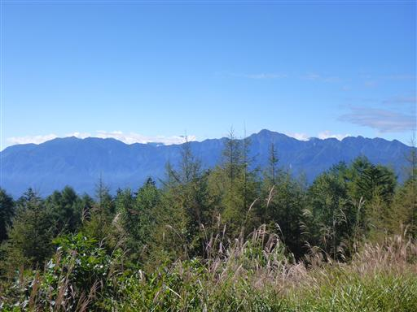
遠く富士山も見えている。笹子トンネル付近は小雨が降っていたが
ここまで来ると、空はきれいに晴れ渡っている。
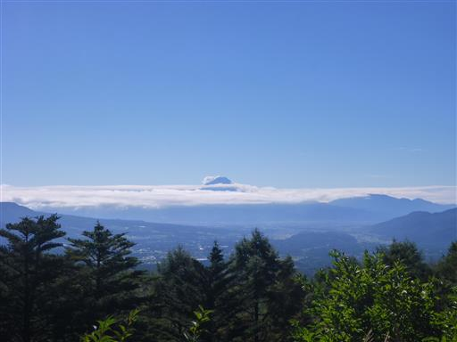
観音平と並んで、ここも編笠山への登山口になっている。
中途半端な場所に路駐して観音平まで車道を歩くより、
ここから直接登った方が早いだろう。
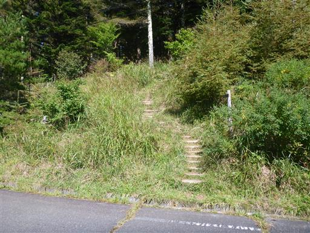
早速、登山開始。
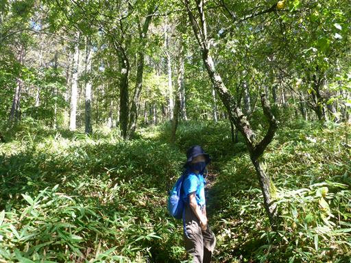
観音平からの道と合流。観音平からだと迂回路になるため、まだ人はあまり増えない。
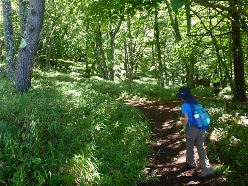
ヌメッとしたキノコ。
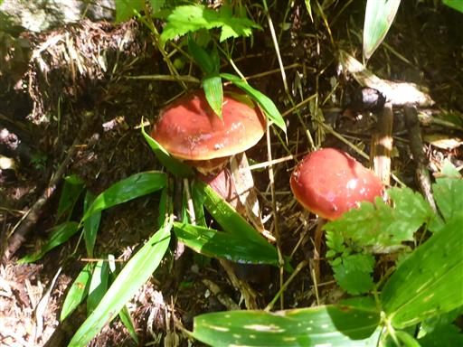
周囲はサルオガセの森だ。
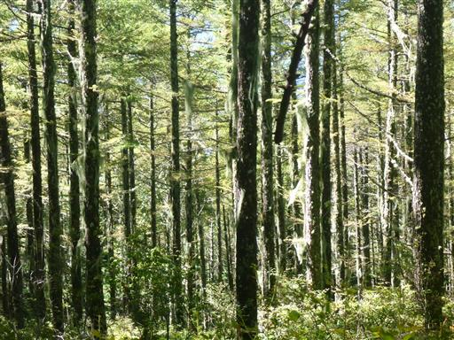
雲海展望台に到着。ここで観音平からのメインルートと合流する。
展望の良い場所という記憶があったが、樹林に囲まれて僅かに富士山が見えるのみだ。
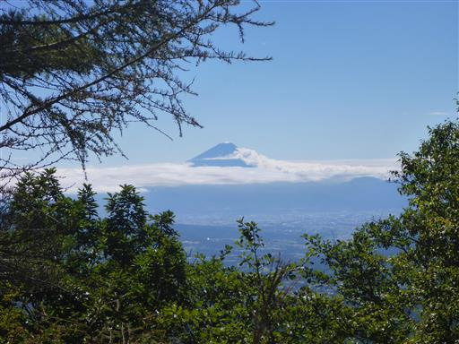
巨大な岩の側を登って行く。観音平の車の数から、
ここから登山者の数が急激に増えるかと思ったが、それほどでもない。
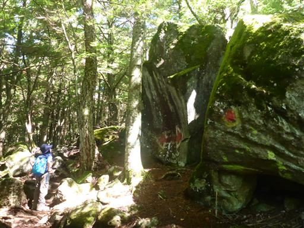
周囲は苔が多く、八ヶ岳らしい風景だ。
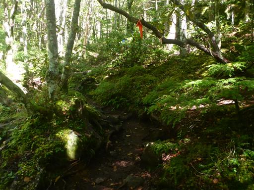
登山道がだんだんと岩だらけの道になってくる。傾斜も少し急になる。
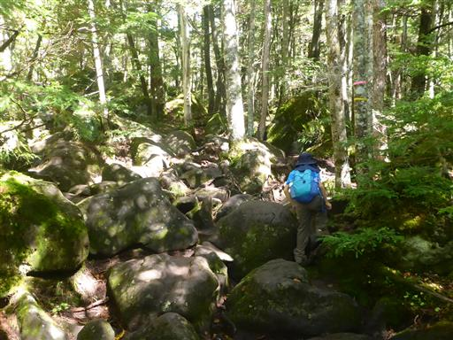
青年小屋に向かう道と分かれて、編笠山に直登する森の中を登って行く。
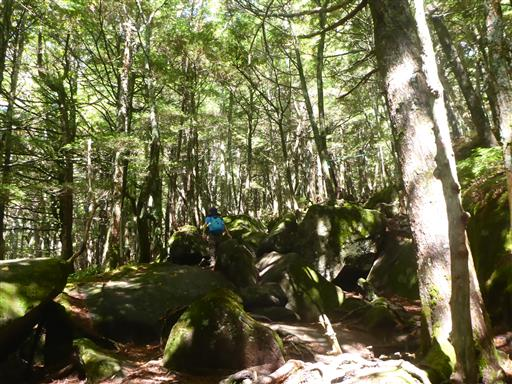
緑色の大きな松ぼっくりが落ちている。
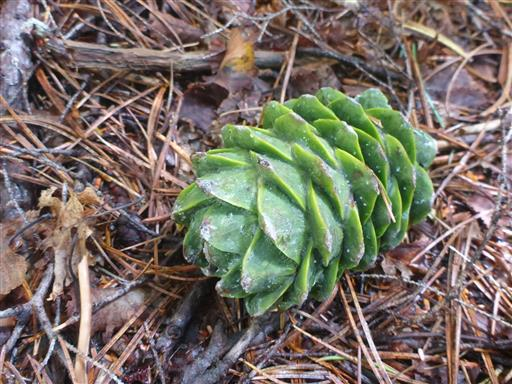
小さなハシゴ。ちょっと揺れる。
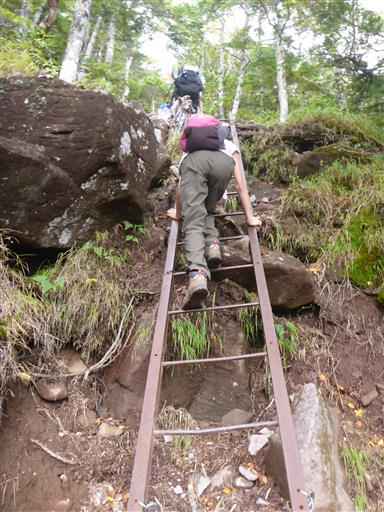
いつの間にか雲がやって来て視界がなくなってしまった。
天気はどんどん良くなっていくと思っていたのに、大きな誤算だ。
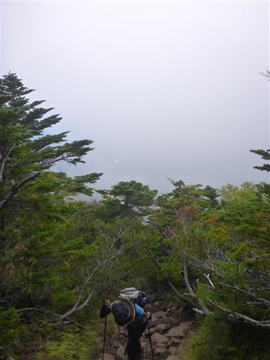
編笠山山頂に到着する。標高2524m。
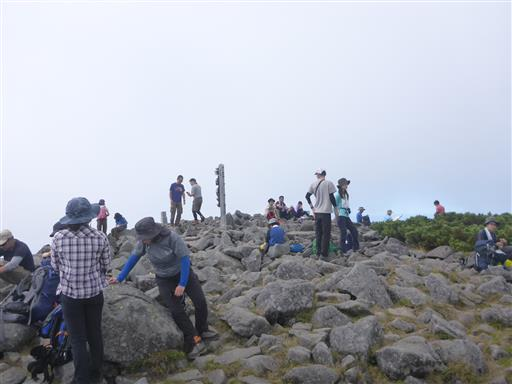
雲に覆われて、八ヶ岳中心部の山々が見えない…
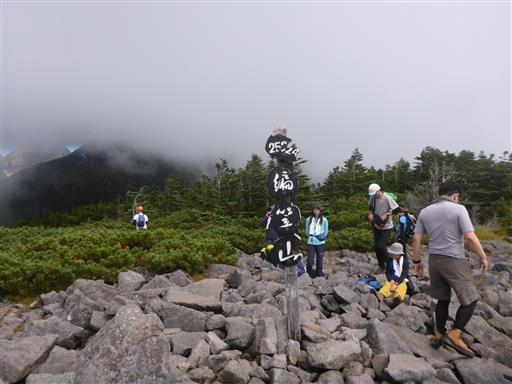
蓼科山は辛うじて見える。
仕方がないので、腰を下ろして昼食をとる。
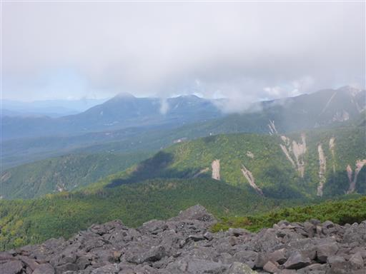
食事をとっていると、雲が消えて視界が広がり出す。
登山口から見えていた富士山が再び姿を現す。
富士山には何層かの雲がかかっている。
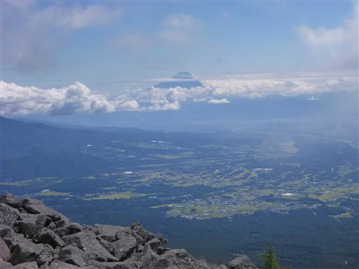
目の前に聳えるのは南アルプス。山頂部はまだちょっと雲がかかっている。
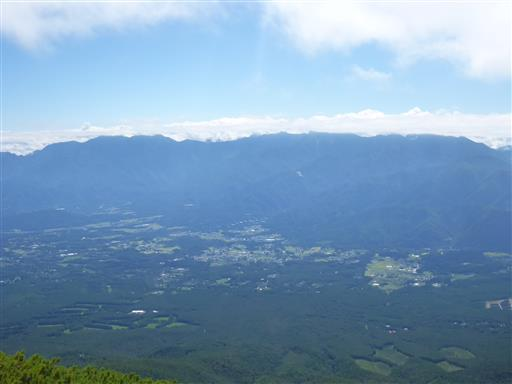
金峰山方面。
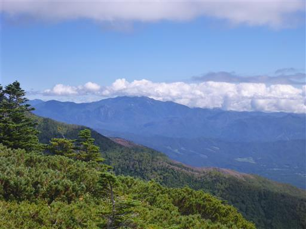
遠く、御岳山。
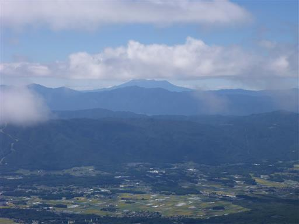
霧ヶ峰と美ヶ原。その背後に連なっているのは北アルプスだ。
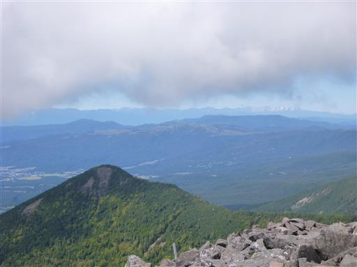
穂高岳～槍ヶ岳の稜線がくっきり見えている。
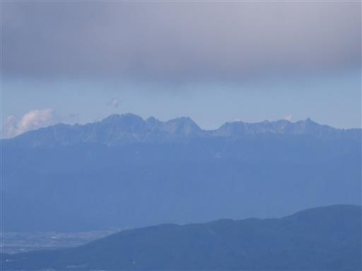
八ヶ岳中心部はまだ雲がかかっているが、赤岳や権現岳が姿を現す。
先ほどの状態を考えると、これだけ展望が広がれば、まあ上出来だろう。
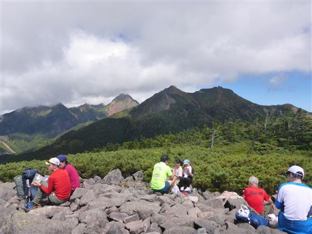
岩だらけの山頂部。青空が広がるとやっぱり気持ちが良い。
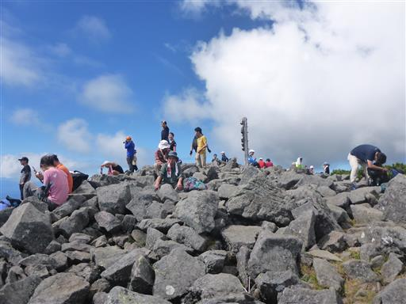
景色を堪能して、山頂で少し遊んだら、下山を開始する。
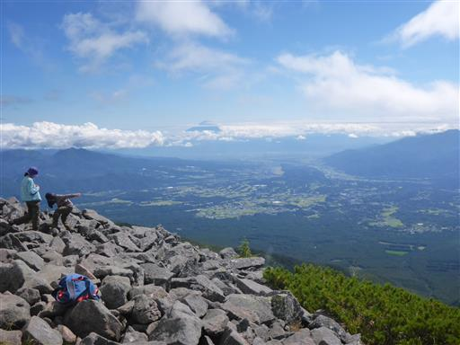
下山は登ってきた道とは逆方向の青年小屋方向に下る。
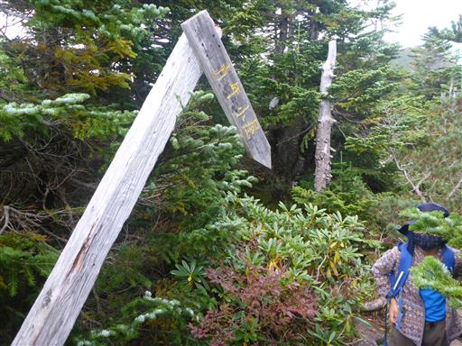
少しだけ紅葉している葉が見られる。
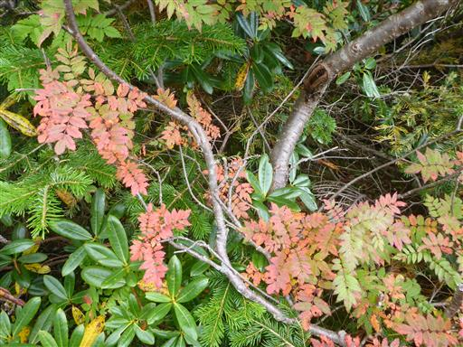
眼下に青年小屋が見えてきた。背後に聳えるのは権現岳だ。
この権現岳にはなかなか行く機会ができない。
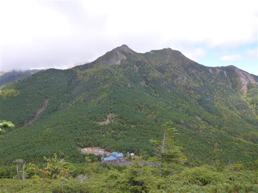
最後は岩だらけの登山道。子供たちはあまり苦にせず、テンポよく下っていく。
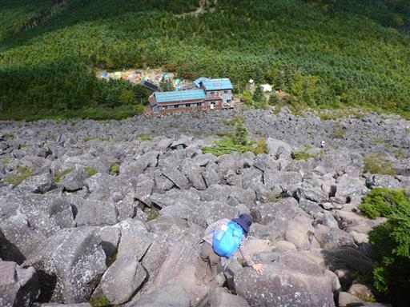
だいぶ下ってきた。一つ一つが巨大な石だ。
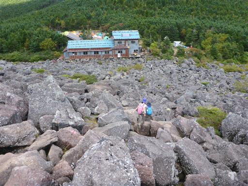
青年小屋に到着。「遠い飲み屋」の提灯が下がっている。
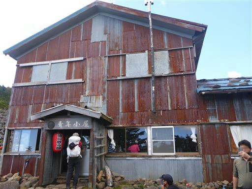
テント場を見学。まだ13時過ぎなのに、すごい数だ。
夕方になるとどうなってしまうのだろう？
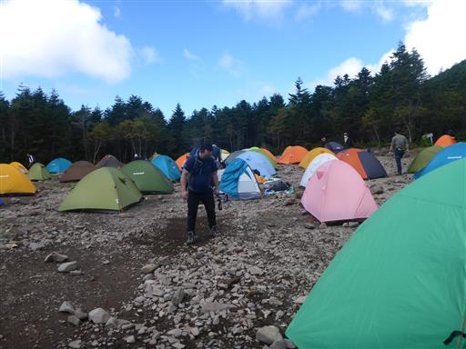
ここから先は普通の登山道。登りの道と合流したら、後は淡々と下る。
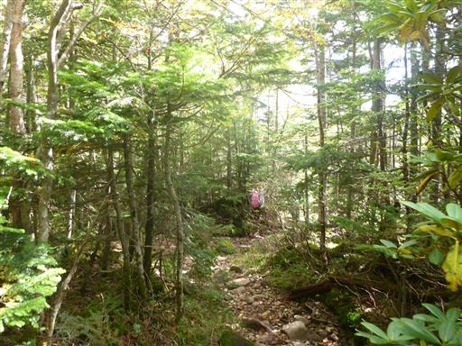
無事下山。
山頂到着時は雲に覆われどうなる事かと思ったが、
途中で雲が開け、周囲の山々を眺めることができて良かった。
登山者が多く、思った以上に人気の山だった。
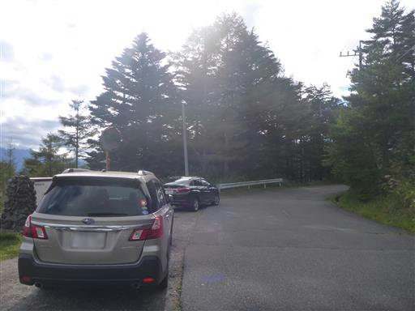